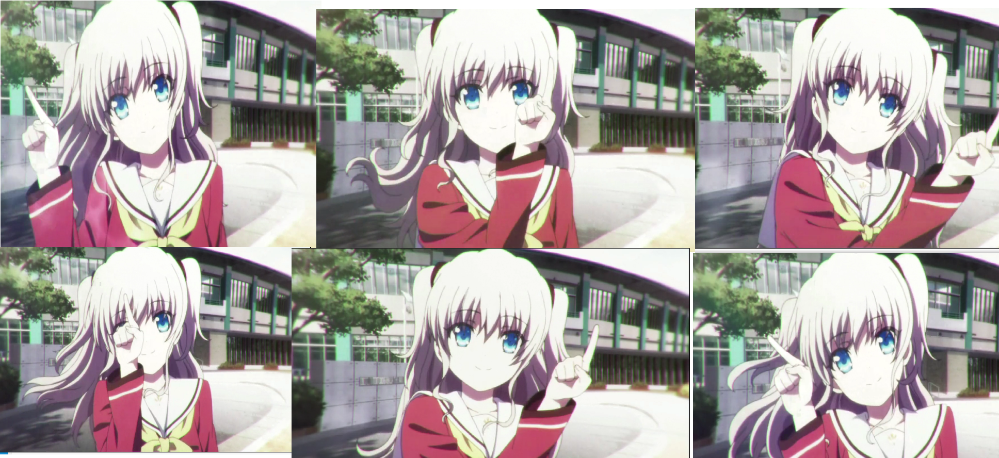

Wasshoiぱちお夏の陣2015
No.16 GIFアニメーション入門した
やり方
友利奈緒を見つめる

ひくなっ！！！！
って言われるくらいにやる方がいいです。むしろ言われないと何も始まりません
SAIで1カットごとにフォルダ分けしてひたすらみおう見まね
絶対もっとかしこい方法あると思う（というかSAIでやるのが頭悪い感じする）
結局計4時間の7枚で午前2時を過ぎ、今回はこれで幕引きにしました
って言われるくらいにやる方がいいです。むしろ言われないと何も始まりません
絶対もっとかしこい方法あると思う（というかSAIでやるのが頭悪い感じする）
結局計4時間の7枚で午前2時を過ぎ、今回はこれで幕引きにしました